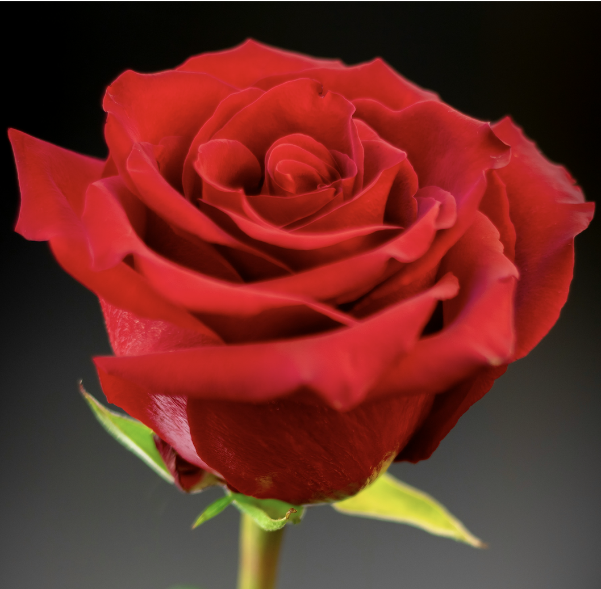
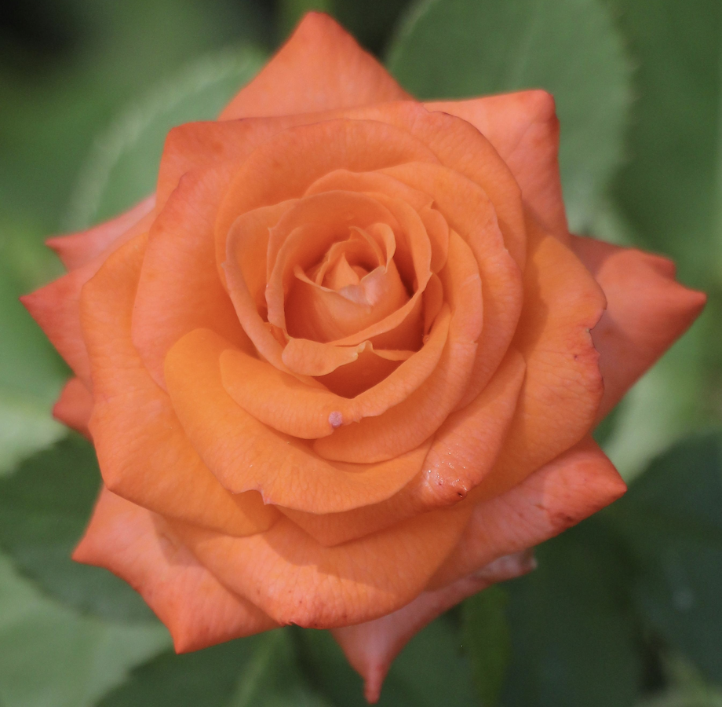
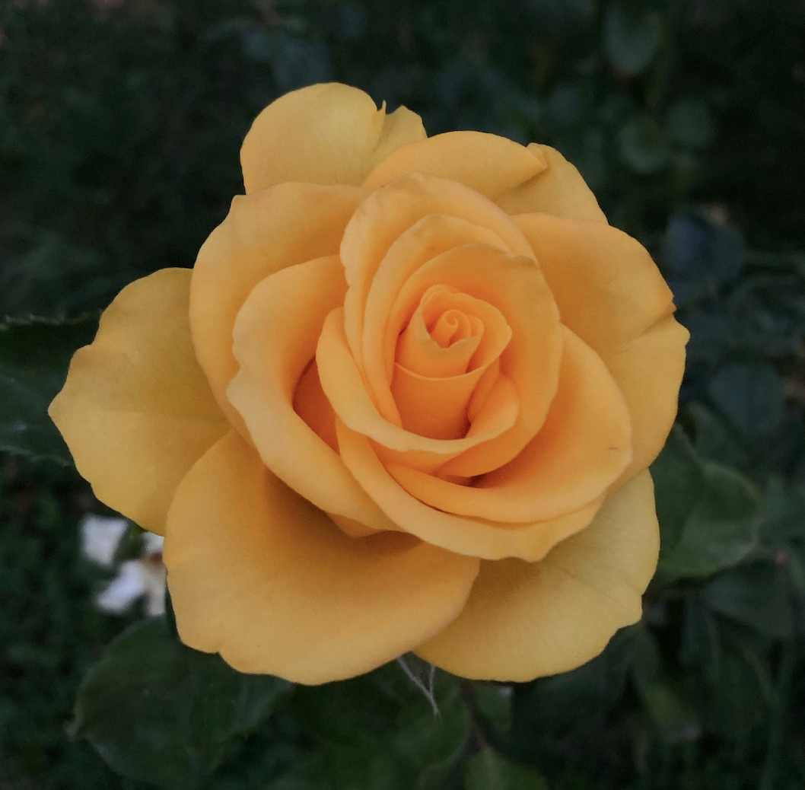
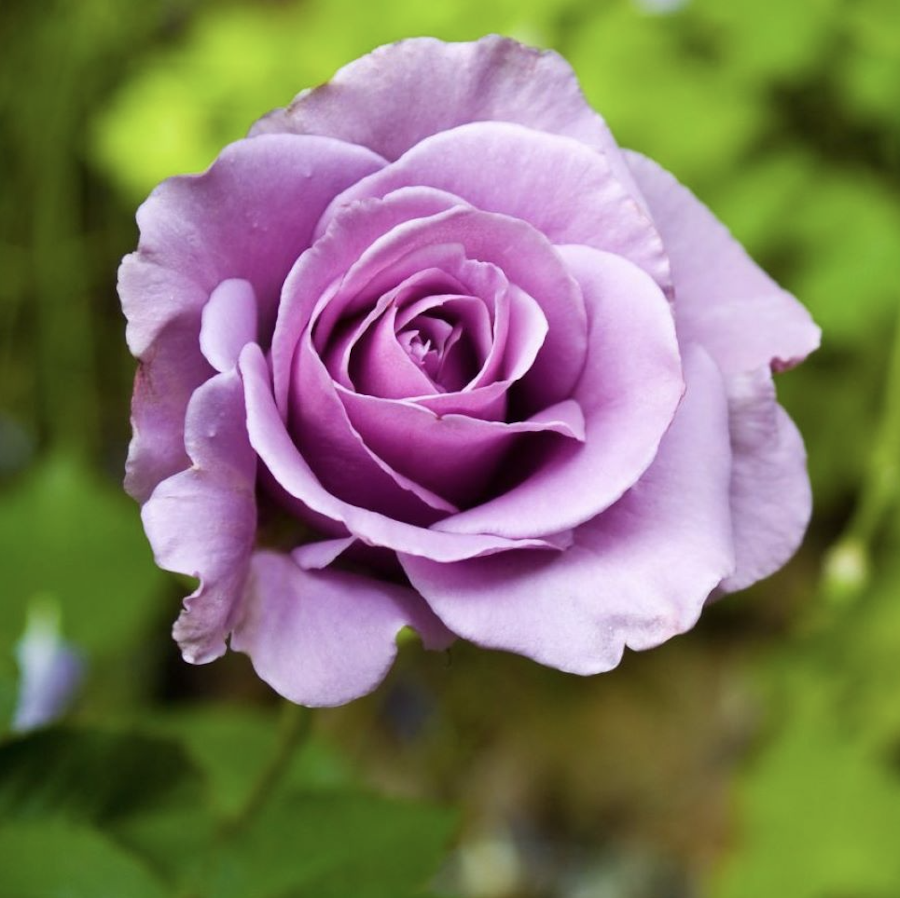
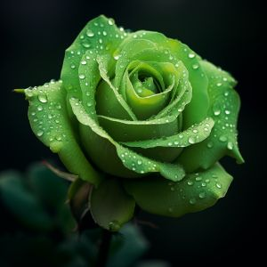
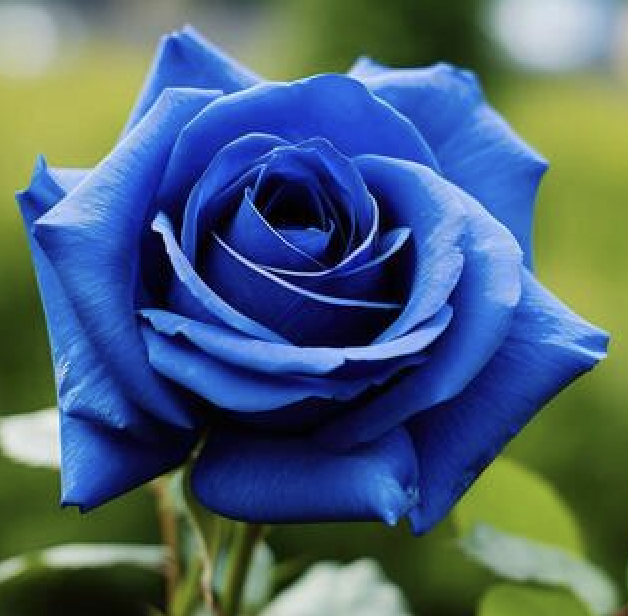
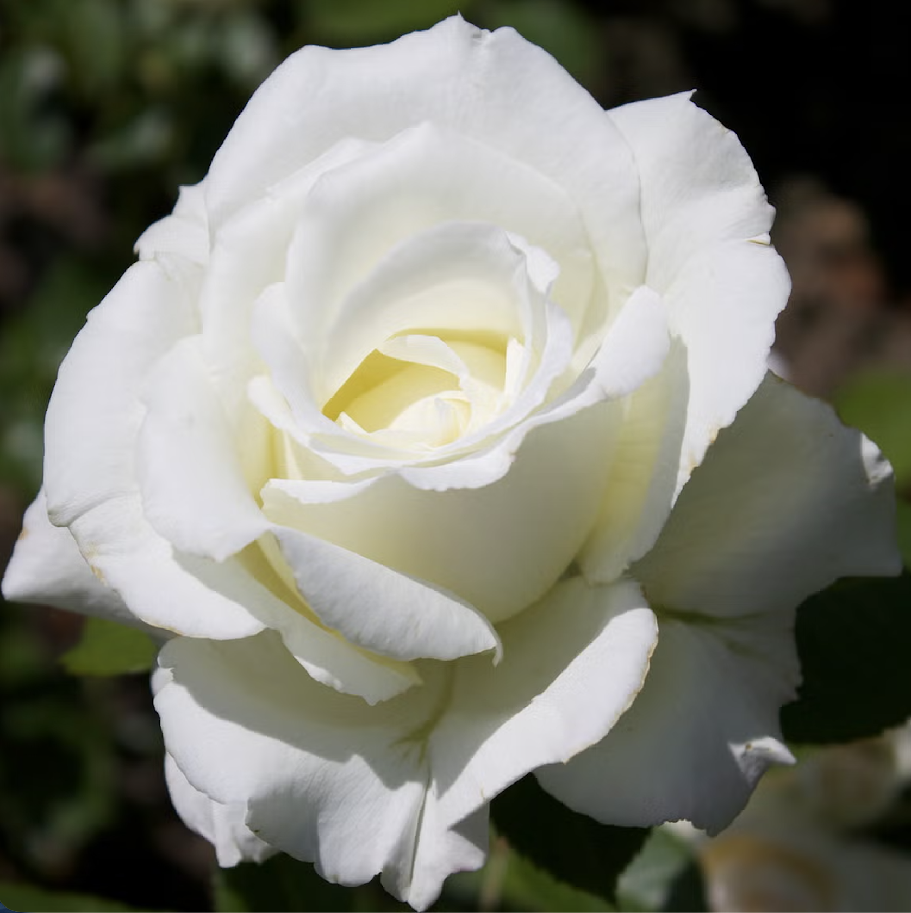
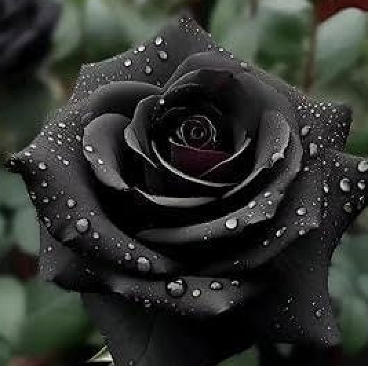

Roses are one of the most well-known and meaningful flowers in the world. For centuries, they have been used to express emotions, tell stories, and symbolise ideas. From love and friendship to mystery and remembrance, each rose carries its own message. This website explores the meanings, uses, and cultural importance of roses, showing how something as simple as a flower can have so many layers of meaning.
What Do Different Rose Colours Mean?
Different colours of roses represent different emotions and ideas. This system of meaning is often called the “language of flowers”, where people can communicate feelings without using words.
Some colours, like blue and black roses, are not natural, but are still popular in the modern days due to their distinct meaning. Do you know that preserving roses symbolises holding on to love, memories, and meaningful moments long after they have passed? Just as a preserved rose keeps its beauty over time, it represents a desire to make special feelings last. It can also suggest remembrance, showing that something once cherished is still valued even as time moves forward.
Hover over the cards below to find out their colour's meaning!

The Red Rose
The Red Rose
Red roses symbolise love, passion, and deep admiration. These fiery blooms have been the quintessential symbol of romantic love for centuries, becoming the flower of choice for expressing deep emotions.

The Orange Rose
The Orange Rose
Orange roses are vibrant symbols of passion, energy, and enthusiasm. Their bold, fiery colour expresses excitement and admiration. The orange rose is perfect for celebrating a new relationship or acknowledging someone’s extraordinary qualities.

The Yellow Rose
The Yellow Rose
The yellow rose colour meaning is all about the ultimate symbol of friendship, joy, and positive energy. They’ve been associated with friendship for centuries and are often gifted to celebrate milestones, new beginnings, or to lift someone’s spirits.

The Pink Rose
The Pink Rose
Pink roses are symbols of gratitude, admiration, and sweetness. Their soft hue carries a message of respect and appreciation, making them the perfect flower for expressing admiration. Interestingly, pink roses weren’t always as common as they are today.

The Purple Rose
The Purple Rose
Purple roses are symbols of enchantment, royalty, and mystery. Their meaning is often associated with the mystical and the unexplained, capturing feelings of fascination and wonder.

The Green Rose
The Green Rose
Green roses symbolise new beginnings, growth, abundance, and fertility, making them perfect for celebrating life milestones, rejuvenation, and career success. They are often used for fresh starts, congratulations, and as a calming, optimistic gift.

The Blue Rose
The Blue Rose
Blue roses are one of the most elusive and mysterious flowers, often symbolising the unattainable or the impossible. They are often associated with mystery, the desire for the unattainable, and the pursuit of the impossible.

The White Rose
The White Rose
These elegant blooms have long been symbols of purity, innocence, and new beginnings. They’re the go-to flowers for life’s big moments, whether it’s a wedding, a new chapter, or honoring someone’s memory.

The Black Rose
The Black Rose
Black roses are symbols of mystery, transformation, and the end of a chapter. While their deep, dark hue often evokes feelings of sadness or mourning, they also carry powerful symbolism related to rebirth and new beginnings.